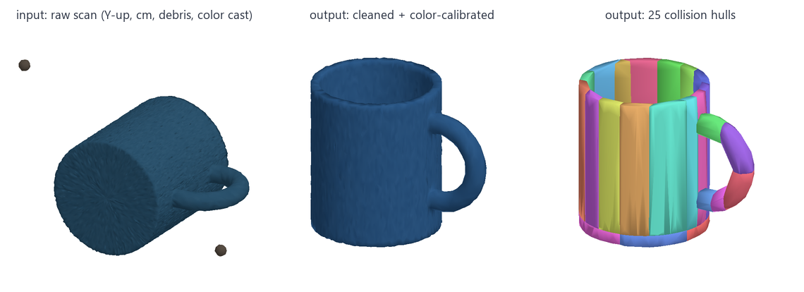

Scan2USD
Phone scans in, physics-ready OpenUSD assets out, for robotics simulation.
Architecture

The CLI calls one orchestrator, which runs five stage modules in order. The validator re-opens the written file, so it tests what a simulator would actually load.
Where we are
M1 · Pipeline core
Clean, calibrate, collide, weigh, export, validate. Synthetic demo, 45 tests.
M2 · Real captures
Your phone photos → mesh (COLMAP / RealityScan); compare against measured mass and size.
M3 · Articulation
Hinged parts as UsdPhysics revolute joints, with limits.
M4 · Isaac Sim
Drop / stack scenes, domain-randomized synthetic images on the RTX 4090.
M5 · Showcase
Video, results table, public repo, resume line.
Demo: synthetic mug

A fake scan with real-world problems (wrong axis, centimeters, debris, 370k triangles, warm color cast) goes in; a clean, calibrated, 371.9 g rigid body with 25 convex colliders comes out. Files are in output\demo\; run scan2usd preview <file> to render any mesh or USD.
Color chart: captured · corrected · reference

What each color reference buys you
Mean ΔE2000 on the demo's color cast. Below about 2 is hard to notice.
| Reference | ΔE | Cost |
|---|---|---|
| none | 6.7 | – |
| white paper (white balance only) | 3.8 | free |
| 18% gray card | 1.7 | ≈ $10 |
| ColorChecker (24 patches) | 0.2 | ≈ $70–110 |
A gray card fixes white balance and exposure. The 24-patch chart also fixes hue cross-talk.
Learn
Photogrammetry · photos → mesh
It matches features across overlapping photos, solves for the camera positions, then builds a textured surface. Gaussian splatting looks more photoreal but has no clean surface, so simulation still needs a mesh.
Comes before the pipeline · M2
Color calibration · your Physically-Based Calibration, for scans
Fit a 3×3 matrix that maps the camera's colors of known chart patches to their true values, in linear light, then apply it to the scan's albedo. ΔE2000 measures the result the way eyes perceive it (≈ 1 is just noticeable).
color.py · fit_ccm, fit_neutral
Convex decomposition · why physics wants convex pieces
Fast collision tests (GJK) only work on convex shapes. CoACD splits a concave mug into hulls that keep its cavity and handle hole open, so things can go inside it.
physics.py · runs on a 4k-triangle proxy for speed
Mass & inertia · how hard to push and to spin
Mass = volume × density, which needs a watertight mesh. The 3×3 inertia tensor is stored as 3 principal moments plus a rotation; it's only physical if I₁ + I₂ ≥ I₃.
physics.py · or pass a measured --mass
OpenUSD & UsdPhysics · what's inside the output
A tree of prims with physics schemas applied, readable by Isaac Sim, Omniverse, Blender and Houdini.
Drop tests · what "stable" means
MuJoCo drops the asset in 3 poses and checks for no NaNs, no energy gain, shallow penetration, and coming to rest. Contacts are soft springs, so impact depth depends on the contact time constant.
simulate.py
Lessons so far
- 517 g → 372 g: decimation broke watertightness, so the mass estimate fell back to hulls. Fixed with topology-preserving decimation.
- 125 s → 25 s: 98% of the time was in convex decomposition. Fixed by running it on a lighter proxy mesh.
- 6.7 mm in every pose: the same depth everywhere pointed to contact softness, not geometry. Fixed with stiffer contacts and separate impact / resting checks.
Next: your capture
Shoot
- Start easy: a matte, textured object (mug, wooden toy, sneaker).
- Then the Xbox controller: on-brand and a good grasping target, but dark glossy plastic is hard. Use soft light and avoid reflections.
- 40–80 photos per object in 3 rings around it. Lock exposure, white balance and focus; no flash.
- Put a newspaper under the object, and a gray card (or white paper) in a few frames.
Measure
- Weight on a kitchen scale (g) and one ruler dimension (mm).
- That lets us report "predicted vs. measured," a strong result line.
- Drop files into
data\raw\<object>\(git-ignored) with anotes.txt.